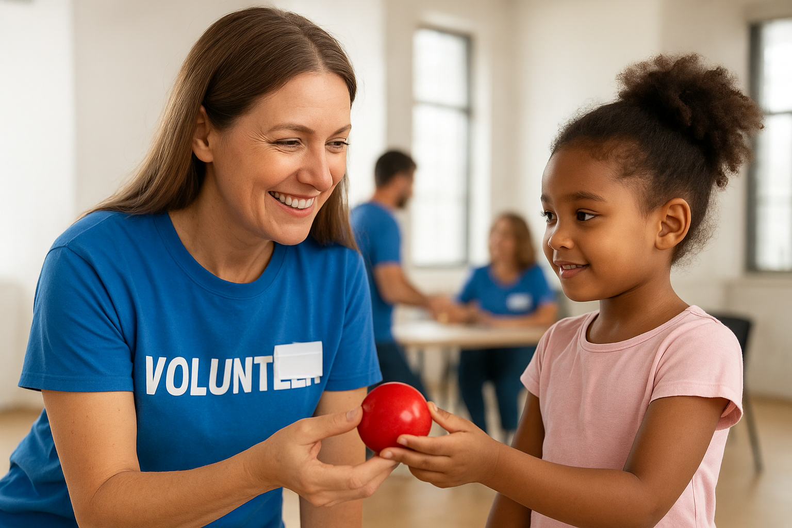

Descubra como nossas ações transformam vidas e como você pode ajudar!!
Nosso projeto de voluntários conecta pessoas dispostas a ajudar familias e comunidades
O projeto de voluntariado visa apoiar famílias em situação de vulnerabilidade e promover a inclusão social de grupos que enfrentam dificuldades.
Os voluntários se cadastram informando suas habilidades e disponibilidade, sendo direcionados para atividades como visitas domiciliares ou participação em ações comunitárias.
O projeto contribui para fortalecer a comunidade, apoiar o desenvolvimento pessoal dos participantes e reduzir barreiras sociais, promovendo um impacto positivo e duradouro na vida das famílias atendidas.
Você pode fazer a diferença, nos ajude a alcançar mais pessoas e transformar vidas
Existe varios meios de contribuir
Para doar, entre em contato conosco através dos seguintes canais:
Educação • União • Comunidade